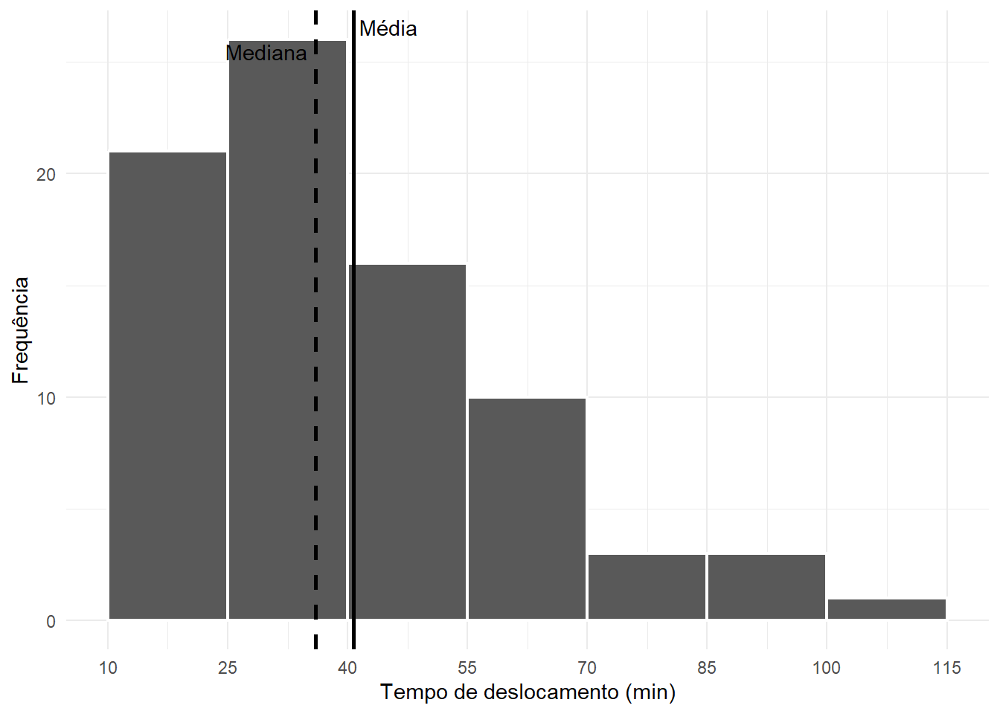

Código
valores <- c(4, 6, 8, 7, 5)
sum(valores)[1] 30As tabelas e os gráficos estudados anteriormente ajudam a organizar e visualizar a distribuição de uma variável. Entretanto, muitas situações exigem também um valor representativo capaz de resumir, de maneira simples, a região em torno da qual os dados se concentram.
Neste capítulo, estudaremos as principais medidas de tendência central: média, mediana e moda. Veremos como calculá-las e interpretá-las, quando cada uma é mais adequada, como os valores extremos podem afetá-las e como sua relação ajuda a compreender a forma de uma distribuição.
A abordagem será sempre integrada: após a apresentação de cada conceito e de exemplos de cálculo, o Laboratório no R mostrará como reproduzir o procedimento computacionalmente.
Uma medida resumo é um valor numérico utilizado para sintetizar alguma característica importante de um conjunto de dados. Em vez de examinar todas as observações individualmente, podemos utilizar alguns números para descrever aspectos como:
Neste capítulo, nosso interesse está na região central. Uma medida de tendência central procura indicar um valor em torno do qual os dados tendem a se concentrar.
As três medidas mais utilizadas são:
Essas medidas não são intercambiáveis. Cada uma resume os dados segundo um princípio diferente e pode responder melhor a determinadas situações.
Nenhuma medida central deve ser analisada isoladamente. Dois conjuntos de dados podem apresentar a mesma média e, ainda assim, possuir distribuições muito diferentes. Por isso, medidas resumo devem ser interpretadas em conjunto com tabelas, gráficos e outras características da distribuição.
Antes de definir a média aritmética, é útil conhecer a notação de somatório, representada pela letra grega sigma maiúscula:
\[\sum.\]
Considere uma variável quantitativa com \(n\) observações:
\[x_1,x_2,\ldots,x_n.\]
A expressão
\[\sum_{i=1}^{n}x_i\]
significa
\[x_1+x_2+\cdots+x_n.\]
O índice \(i\) identifica cada observação, começando em \(i=1\) e terminando em \(i=n\).
Por exemplo, para os valores
\[4,\ 6,\ 8,\ 7,\ 5,\]
temos
\[\sum_{i=1}^{5}x_i = 4+6+8+7+5 = 30.\]
A notação de somatório permite escrever fórmulas de maneira compacta e será utilizada ao longo deste e dos próximos capítulos.
No R, a função sum() calcula a soma dos valores de um vetor:
valores <- c(4, 6, 8, 7, 5)
sum(valores)[1] 30O comando acima reproduz computacionalmente a operação
\[\sum_{i=1}^{5}x_i.\]
Se houver valores ausentes (NA), é necessário decidir se eles devem ser removidos do cálculo:
valores_com_na <- c(4, 6, NA, 7, 5)
sum(
valores_com_na,
na.rm = TRUE
)[1] 22O argumento na.rm = TRUE informa ao R que os valores ausentes devem ser desconsiderados no cálculo.
A média aritmética é obtida somando todas as observações e dividindo o resultado pelo número de observações.
Para \(n\) valores \(x_1,x_2,\ldots,x_n\), a média amostral é dada por
\[\bar{x} = \frac{x_1+x_2+\cdots+x_n}{n} = \frac{1}{n}\sum_{i=1}^{n}x_i.\]
O símbolo \(\bar{x}\) lê-se x barra e representa a média das observações de uma amostra. Quando estamos descrevendo uma população inteira, é comum representar a média populacional por \(\mu\):
\[\mu = \frac{1}{N}\sum_{i=1}^{N}x_i,\]
em que \(N\) é o tamanho da população.
Considere o número de faltas de 20 estudantes:
\[0,\ 2,\ 1,\ 3,\ 2,\ 0,\ 4,\ 1,\ 2,\ 2,\ 5,\ 0,\ 1,\ 3,\ 2,\ 4,\ 1,\ 2,\ 0,\ 3.\]
A soma das observações é
\[\sum_{i=1}^{20}x_i=38.\]
Logo,
\[\bar{x} = \frac{38}{20} = 1{,}9.\]
Assim, o número médio de faltas foi de 1,9 falta por estudante.
Observe que a média não precisa coincidir com um valor efetivamente observado. Nesse exemplo, nenhum estudante possui exatamente 1,9 falta. A média funciona como um ponto de equilíbrio numérico da distribuição.
No R, a média é obtida pela função mean():
faltas_exemplo <- c(
0, 2, 1, 3, 2,
0, 4, 1, 2, 2,
5, 0, 1, 3, 2,
4, 1, 2, 0, 3
)
mean(faltas_exemplo)[1] 1.9Também podemos conferir o cálculo utilizando diretamente a definição:
sum(faltas_exemplo) /
length(faltas_exemplo)[1] 1.9Para o banco dados, a média do número de faltas é:
mean(dados$faltas)[1] 2.125Quando a variável contém valores ausentes, devemos decidir explicitamente como tratá-los:
mean(
dados$faltas,
na.rm = TRUE
)[1] 2.125Além de representar o centro de um conjunto de valores, a média aritmética possui propriedades matemáticas importantes. Elas ajudam a compreender seu comportamento e explicam por que essa medida aparece com tanta frequência em Estatística.
Considere uma amostra formada pelos valores
\[ x_1,x_2,\ldots,x_n, \]
cuja média aritmética é
\[ \bar{x}=\frac{1}{n}\sum_{i=1}^{n}x_i. \]
Para um conjunto de valores numéricos, a média aritmética é determinada de forma única.
Por exemplo, para os valores
\[ 4,\ 6,\ 8,\ 10, \]
temos
\[ \bar{x} = \frac{4+6+8+10}{4} = 7. \]
Portanto, a média desse conjunto é unicamente igual a 7.
A média aritmética não pode ser menor que a menor observação nem maior que a maior observação:
\[ \min(x_i)\leq \bar{x}\leq \max(x_i). \]
No exemplo anterior,
\[ 4\leq 7\leq 10. \]
Essa propriedade também pode ser utilizada como uma verificação simples de um cálculo. Se a média calculada estiver fora do intervalo dos dados, certamente ocorreu algum erro.
Da definição da média,
\[ \bar{x} = \frac{\sum_{i=1}^{n}x_i}{n}, \]
segue que
\[ \sum_{i=1}^{n}x_i=n\bar{x}. \]
Assim, conhecendo a média e o número de observações, podemos determinar a soma dos valores.
Por exemplo, se 30 estudantes apresentaram média de 7,2 pontos, então a soma das notas é
\[ 30\times7,2=216. \]
Uma das propriedades mais importantes da média é
\[ \sum_{i=1}^{n}(x_i-\bar{x})=0. \]
Isso significa que os desvios positivos e negativos em relação à média se compensam.
Considere novamente
\[ 4,\ 6,\ 8,\ 10, \]
cuja média é 7. Os desvios em relação à média são
\[ 4-7=-3, \]
\[ 6-7=-1, \]
\[ 8-7=1, \]
e
\[ 10-7=3. \]
Portanto,
\[ (-3)+(-1)+1+3=0. \]
A média pode ser vista como um ponto de equilíbrio dos dados: os desvios situados abaixo e acima dela se compensam quando considerados com seus respectivos sinais.
Entre todos os possíveis valores utilizados como referência, a média aritmética é aquele que produz a menor soma dos quadrados das distâncias em relação às observações.
Em outras palavras,
\[ \sum_{i=1}^{n}(x_i-\bar{x})^2 \leq \sum_{i=1}^{n}(x_i-c)^2, \]
para qualquer constante \(c\).
Essa propriedade será importante posteriormente em diversos métodos estatísticos.
Considere novamente os valores
\[ 4,\ 6,\ 8,\ 10. \]
Utilizando a média \(\bar{x}=7\) como referência,
\[ (4-7)^2+(6-7)^2+(8-7)^2+(10-7)^2 = 9+1+1+9 = 20. \]
Se utilizarmos, por exemplo, \(c=6\),
\[ (4-6)^2+(6-6)^2+(8-6)^2+(10-6)^2 = 4+0+4+16 = 24. \]
A soma dos quadrados é menor quando utilizamos a média.
Se adicionarmos uma mesma constante \(a\) a todas as observações,
\[ y_i=x_i+a, \]
a nova média será
\[ \bar{y}=\bar{x}+a. \]
Por exemplo, considere as notas
\[ 5,\ 6,\ 7,\ 8. \]
A média é
\[ \bar{x}=6,5. \]
Se acrescentarmos 1 ponto a todas as notas, teremos
\[ 6,\ 7,\ 8,\ 9, \]
e a nova média será
\[ \bar{y}=7,5. \]
Portanto, acrescentar 1 a cada observação também acrescenta 1 à média.
Se todos os valores forem multiplicados por uma constante \(b\),
\[ y_i=bx_i, \]
a média também será multiplicada por essa constante:
\[ \bar{y}=b\bar{x}. \]
Essa propriedade aparece frequentemente em mudanças de unidade.
Por exemplo, se a altura média de um grupo for
\[ 1,72\text{ m}, \]
ao converter as alturas para centímetros teremos
\[ 100\times1,72=172\text{ cm}. \]
As duas propriedades anteriores podem ser reunidas. Se
\[ y_i=a+bx_i, \]
então
\[ \bar{y}=a+b\bar{x}. \]
Assim, não é necessário recalcular toda a média quando todos os dados sofrem a mesma transformação linear.
Quando um conjunto de dados é dividido em grupos de tamanhos diferentes, a média geral não é, em geral, a média simples das médias dos grupos.
Considere duas turmas:
| Turma | Número de estudantes | Média |
|---|---|---|
| A | 10 | 8,0 |
| B | 40 | 6,0 |
Como mostra a Tabela 5.1, as turmas apresentam tamanhos diferentes. Portanto, não seria correto calcular simplesmente
\[ \frac{8+6}{2}=7. \]
A média geral deve considerar o número de estudantes de cada grupo:
\[ \bar{x} = \frac{10(8)+40(6)}{10+40} = \frac{320}{50} = 6,4. \]
De modo geral, se existem \(k\) grupos com tamanhos \(n_1,n_2,\ldots,n_k\) e médias \(\bar{x}_1,\bar{x}_2,\ldots,\bar{x}_k\), então
\[ \bar{x} = \frac{ n_1\bar{x}_1+n_2\bar{x}_2+\cdots+n_k\bar{x}_k }{ n_1+n_2+\cdots+n_k }. \]
Observe que essa expressão corresponde a uma média ponderada, em que os tamanhos dos grupos funcionam como pesos.
A média utiliza todas as observações em seu cálculo. Por isso, alterações em qualquer valor provocam alterações na média.
Essa característica faz com que a média seja particularmente sensível a observações muito afastadas das demais.
Por exemplo, considere
\[ 10,\ 11,\ 12,\ 13,\ 14. \]
A média é
\[ \bar{x}=12. \]
Agora substitua o maior valor por 50:
\[ 10,\ 11,\ 12,\ 13,\ 50. \]
A nova média será
\[ \bar{x}=19,2. \]
Apesar de quatro das cinco observações continuarem entre 10 e 13, a média aumentou consideravelmente devido à presença do valor 50.
A média aritmética utiliza todas as observações, é matematicamente bem definida e possui importantes propriedades algébricas. Entretanto, justamente por utilizar todos os valores, pode ser fortemente influenciada por observações extremas.
Podemos verificar algumas dessas propriedades utilizando o R.
Considere os valores:
x <- c(4, 6, 8, 10)
mean(x)[1] 7Vamos verificar a soma dos desvios em relação à média:
x - mean(x)[1] -3 -1 1 3sum(x - mean(x))[1] 0O resultado é zero, confirmando que
\[ \sum_{i=1}^{n}(x_i-\bar{x})=0. \]
Também podemos verificar a propriedade da soma:
sum(x)[1] 28length(x) * mean(x)[1] 28Os dois comandos produzem o mesmo resultado, pois
\[ \sum_{i=1}^{n}x_i=n\bar{x}. \]
Agora, adicionaremos 5 a cada observação:
y <- x + 5
mean(x)[1] 7mean(y)[1] 12A média também aumenta em 5.
Podemos verificar diretamente:
mean(x) + 5[1] 12Agora multiplicaremos todos os valores por 10:
z <- 10 * x
mean(z)[1] 7010 * mean(x)[1] 70Novamente, os resultados são iguais.
Por fim, podemos verificar numericamente a propriedade de minimização da soma dos quadrados dos desvios:
sum((x - mean(x))^2)[1] 20Compare com outros possíveis centros:
sum((x - 5)^2)[1] 36sum((x - 6)^2)[1] 24sum((x - 7)^2)[1] 20sum((x - 8)^2)[1] 24sum((x - 9)^2)[1] 36Como a média é
mean(x)[1] 7a menor soma dos quadrados ocorre quando utilizamos 7 como centro.
Nem sempre todas as observações possuem a mesma importância. Em algumas situações, cada valor \(x_i\) está associado a um peso \(w_i\).
A média aritmética ponderada é definida por
\[\bar{x}_p = \frac{\sum_{i=1}^{n}w_i x_i} {\sum_{i=1}^{n}w_i}.\]
Valores com pesos maiores exercem maior influência sobre o resultado.
Considere três avaliações com notas e pesos diferentes:
| Avaliação | Nota (\(x_i\)) | Peso (\(w_i\)) | \(w_i x_i\) |
|---|---|---|---|
| 1 | 7,0 | 2 | 14,0 |
| 2 | 8,5 | 3 | 25,5 |
| 3 | 9,0 | 5 | 45,0 |
| Total | 10 | 84,5 |
Como mostra a Tabela 5.2, a terceira avaliação possui o maior peso e, portanto, maior participação no cálculo.
A média ponderada é
\[\bar{x}_p = \frac{2(7{,}0)+3(8{,}5)+5(9{,}0)} {2+3+5} = \frac{84{,}5}{10} = 8{,}45.\]
Podemos reproduzir o cálculo diretamente:
notas <- c(7.0, 8.5, 9.0)
pesos <- c(2, 3, 5)
sum(notas * pesos) /
sum(pesos)[1] 8.45O R também possui a função weighted.mean():
weighted.mean(
notas,
pesos
)[1] 8.45Os pesos não precisam necessariamente representar a importância de avaliações. Em uma tabela de frequências, por exemplo, as próprias frequências podem atuar como pesos.
A média aritmética utiliza todas as observações no cálculo e, por esse motivo, pode ser bastante influenciada por valores muito pequenos ou muito grandes. Em algumas situações, deseja-se manter a ideia de calcular uma média, mas reduzir a influência das observações localizadas nas extremidades da distribuição.
Uma possibilidade é utilizar a média aparada (trimmed mean).
Na média aparada, uma mesma proporção de observações é retirada de cada extremidade do conjunto de dados ordenado e, em seguida, calcula-se a média aritmética dos valores restantes.
Considere as observações ordenadas
\[ x_{(1)} \leq x_{(2)} \leq \cdots \leq x_{(n)}. \]
Seja \(\alpha\) a proporção que será retirada de cada extremidade e
\[ r = \lfloor n\alpha \rfloor \]
o número de observações retiradas de cada lado. A média aparada é dada por
\[ \bar{x}_{\alpha} = \frac{1}{n-2r} \sum_{i=r+1}^{n-r}x_{(i)}. \]
Assim, uma média aparada em 10%, por exemplo, retira aproximadamente 10% das menores observações e 10% das maiores observações, conservando aproximadamente 80% dos valores centrais.
Uma média aparada de 10% não significa retirar 10% dos dados no total. A retirada ocorre nas duas extremidades: 10% dos menores valores e 10% dos maiores valores.
A média aparada procura combinar duas características:
Ela não deve, entretanto, ser utilizada automaticamente sempre que houver valores elevados ou reduzidos. Antes de escolher uma medida resumo, é necessário compreender a natureza dos dados e verificar se as observações extremas são erros, valores legítimos ou características importantes da população estudada.
Considere os salários, em reais, de dez trabalhadores:
\[ 2500,\ 2600,\ 2700,\ 2800,\ 2900,\ 3000,\ 3100,\ 3200,\ 3300,\ 15000. \]
O salário de R$ 15.000 é muito superior aos demais e exerce forte influência sobre a média aritmética.
A média simples é
\[ \bar{x} = \frac{2500+2600+\cdots+3300+15000}{10} = 4110. \]
Portanto,
\[ \bar{x}=\text{R\$ }4.110,00. \]
Agora considere uma média aparada em 10%. Como temos \(n=10\) observações,
\[ r=\lfloor 10(0,10)\rfloor=1. \]
Retiramos, portanto, uma observação de cada extremidade:
Permanecem os valores
\[ 2600,\ 2700,\ 2800,\ 2900,\ 3000,\ 3100,\ 3200,\ 3300. \]
A média desses oito valores é
\[ \bar{x}_{0,10} = \frac{2600+2700+\cdots+3300}{8} = 2950. \]
A Tabela 5.3 compara as três medidas.
| Medida | Valor (R$) |
|---|---|
| Média aritmética simples | 4.110,00 |
| Média aparada em 10% | 2.950,00 |
| Mediana | 2.950,00 |
A Tabela 5.3 evidencia a influência do salário de R$ 15.000 sobre a média aritmética simples. Enquanto a média é de R$ 4.110,00, a média aparada em 10% é de R$ 2.950,00. Neste exemplo particular, a média aparada coincide com a mediana.
Isso não significa que a média aparada e a mediana sejam medidas equivalentes. A coincidência ocorre apenas para esse conjunto específico de dados.
A média aparada ocupa uma posição interessante entre as duas medidas: utiliza vários dos valores observados, como a média aritmética, mas reduz a influência das extremidades da distribuição.
No R, a média aparada pode ser calculada diretamente com a função mean(), utilizando o argumento trim.
Primeiramente, vamos reproduzir o exemplo dos salários.
salarios <- c(
2500, 2600, 2700, 2800, 2900,
3000, 3100, 3200, 3300, 15000
)
mean(salarios)[1] 4110A média aritmética simples é obtida normalmente com mean().
Para calcular uma média aparada em 10%, usamos:
mean(salarios, trim = 0.10)[1] 2950O argumento
trim = 0.10informa ao R que deve retirar 10% das observações de cada extremidade antes de calcular a média.
Podemos comparar as três medidas:
mean(salarios)[1] 4110mean(salarios, trim = 0.10)[1] 2950median(salarios)[1] 2950Também podemos organizar os resultados em um objeto:
comparacao <- tibble(
medida = c(
"Média aritmética",
"Média aparada (10%)",
"Mediana"
),
valor = c(
mean(salarios),
mean(salarios, trim = 0.10),
median(salarios)
)
)
comparacao# A tibble: 3 × 2
medida valor
<chr> <dbl>
1 Média aritmética 4110
2 Média aparada (10%) 2950
3 Mediana 2950Observe que trim representa a proporção eliminada de cada extremidade. Por exemplo:
mean(x, trim = 0.05)utiliza uma aparagem de 5% em cada extremidade, enquanto
mean(x, trim = 0.20)utiliza uma aparagem de 20% em cada extremidade.
Quanto maior o valor de trim, menor será a influência dos valores extremos, mas também menor será a quantidade de observações utilizada diretamente no cálculo da média.
estudantesPodemos aplicar a mesma ideia ao tempo de deslocamento dos 80 estudantes.
Primeiramente, compare a média e a mediana:
mean(dados$tempo_deslocamento_min)[1] 40.76125median(dados$tempo_deslocamento_min)[1] 36Agora calcule uma média aparada em 10%:
mean(
dados$tempo_deslocamento_min,
trim = 0.10
)[1] 38.43125Como existem 80 estudantes,
\[ 80\times 0,10=8. \]
Assim, o cálculo desconsidera os 8 menores e os 8 maiores tempos de deslocamento e calcula a média utilizando as 64 observações centrais.
Podemos reunir as três medidas:
tibble(
medida = c(
"Média aritmética",
"Média aparada (10%)",
"Mediana"
),
tempo_min = c(
mean(dados$tempo_deslocamento_min),
mean(dados$tempo_deslocamento_min, trim = 0.10),
median(dados$tempo_deslocamento_min)
)
)# A tibble: 3 × 2
medida tempo_min
<chr> <dbl>
1 Média aritmética 40.8
2 Média aparada (10%) 38.4
3 Mediana 36 Compare os resultados obtidos. Se a média aparada estiver consideravelmente mais próxima da mediana do que da média aritmética simples, isso pode ser um indício de que os valores localizados nas extremidades estão exercendo influência sobre a média.
A média aparada pode ser útil quando a variável é quantitativa e existem observações extremas legítimas que exercem grande influência sobre a média. Ela aparece, por exemplo, em situações envolvendo tempos de espera, rendimentos, preços, tempos de execução e outras variáveis que podem apresentar valores muito afastados da maior parte das observações.
Entretanto, a escolha da proporção de aparagem deve ser justificada. Não existe um percentual universalmente adequado para todos os conjuntos de dados.
A média aritmética utiliza todas as observações e é sensível a valores extremos. A mediana é mais resistente a esses valores. A média aparada constitui uma alternativa intermediária: remove simetricamente uma proporção das observações das duas extremidades e calcula a média dos valores restantes.
A mediana é o valor que ocupa a posição central de um conjunto de dados depois que as observações são ordenadas.
Sua interpretação é posicional: aproximadamente metade das observações fica abaixo da mediana e metade fica acima dela.
Para calcular a mediana, é indispensável construir mental ou explicitamente o rol.
Considere
\[2,\ 4,\ 5,\ 7,\ 9.\]
Como \(n=5\), existe uma única posição central:
\[\frac{n+1}{2} = \frac{6}{2} = 3.\]
O terceiro valor é 5. Portanto,
\[Md=5.\]
Considere agora
\[2,\ 4,\ 5,\ 7,\ 9,\ 12.\]
Como \(n=6\), existem duas posições centrais: a terceira e a quarta. A mediana é a média desses dois valores:
\[Md = \frac{5+7}{2} = 6.\]
Observe novamente que a mediana não precisa ser um valor observado no conjunto.
No R, utilizamos median():
x_impar <- c(2, 4, 5, 7, 9)
median(x_impar)[1] 5Para um número par de observações:
x_par <- c(2, 4, 5, 7, 9, 12)
median(x_par)[1] 6No banco dos 80 estudantes, podemos calcular a mediana do tempo de deslocamento:
median(
dados$tempo_deslocamento_min
)[1] 36Como existem 80 observações, a mediana é determinada pelos valores que ocupam as posições 40 e 41 no rol. Podemos verificá-los:
sort(dados$tempo_deslocamento_min)[
c(40, 41)
][1] 35.7 36.3A média desses dois valores resulta na mediana:
mean(
sort(dados$tempo_deslocamento_min)[
c(40, 41)
]
)[1] 36A moda é o valor ou categoria que ocorre com maior frequência.
Diferentemente da média e da mediana, a moda pode ser utilizada tanto para variáveis quantitativas quanto para variáveis qualitativas.
Considere novamente as faltas de 20 estudantes:
\[0,\ 2,\ 1,\ 3,\ 2,\ 0,\ 4,\ 1,\ 2,\ 2,\ 5,\ 0,\ 1,\ 3,\ 2,\ 4,\ 1,\ 2,\ 0,\ 3.\]
O valor 2 ocorre seis vezes, mais do que qualquer outro valor. Portanto,
\[Mo=2.\]
Uma distribuição pode ser:
Para uma variável como meio_transporte, a categoria mais frequente também é a moda. Assim, a moda é a única das três medidas estudadas nesta seção que pode ser utilizada diretamente com variáveis qualitativas nominais.
O R base não possui uma função chamada mode() para calcular a moda estatística. A função mode() existente no R tem outra finalidade: informar o modo de armazenamento de um objeto.
Uma forma simples de identificar a moda é construir e ordenar uma tabela de frequências:
dados |>
count(faltas, name = "fi") |>
arrange(desc(fi)) |>
knitr::kable(
col.names = c(
"Número de faltas",
"Frequência"
),
align = c("r", "r")
)| Número de faltas | Frequência |
|---|---|
| 1 | 24 |
| 2 | 24 |
| 3 | 19 |
| 4 | 5 |
| 0 | 4 |
| 5 | 3 |
| 6 | 1 |
A Tabela 5.4 permite identificar diretamente o valor ou os valores associados à maior frequência.
Para tornar o procedimento reutilizável, podemos criar uma função:
moda <- function(x, na.rm = TRUE) {
if (na.rm) {
x <- x[!is.na(x)]
}
frequencias <- table(x)
maior_frequencia <- max(frequencias)
if (maior_frequencia == 1) {
return(NA)
}
valores_modais <- names(frequencias)[
frequencias == maior_frequencia
]
if (is.numeric(x)) {
as.numeric(valores_modais)
} else {
valores_modais
}
}Agora podemos calcular:
moda(dados$faltas)[1] 1 2No banco dos 80 estudantes, o resultado mostra que a variável faltas possui duas modas.
Para uma variável qualitativa:
moda(dados$meio_transporte)[1] "Ônibus"Quando os dados são apresentados em uma distribuição de frequências, as medidas de tendência central podem ser obtidas diretamente da tabela. É importante distinguir dois casos:
Considere a distribuição de faltas dos 20 estudantes:
| Número de faltas (\(x_i\)) | \(f_i\) | \(x_i f_i\) | \(F_i\) |
|---|---|---|---|
| 0 | 4 | 0 | 4 |
| 1 | 4 | 4 | 8 |
| 2 | 6 | 12 | 14 |
| 3 | 3 | 9 | 17 |
| 4 | 2 | 8 | 19 |
| 5 | 1 | 5 | 20 |
| Total | 20 | 38 |
A Tabela 5.5 contém toda a informação necessária para obter as três medidas.
Como cada valor \(x_i\) ocorre \(f_i\) vezes, a frequência atua como um peso:
\[\bar{x} = \frac{\sum x_i f_i} {\sum f_i}.\]
Logo,
\[\bar{x} = \frac{38}{20} = 1{,}9.\]
O resultado é exatamente o mesmo obtido a partir dos 20 dados individuais.
Primeiro construímos a tabela:
tab_faltas_20 <- tibble(
xi = 0:5,
fi = c(4, 4, 6, 3, 2, 1)
) |>
mutate(
produto = xi * fi,
Fi = cumsum(fi)
)
tab_faltas_20 |>
knitr::kable(
col.names = c(
"Número de faltas",
"Frequência",
"xi × fi",
"Frequência acumulada"
),
align = c("r", "r", "r", "r")
)| Número de faltas | Frequência | xi × fi | Frequência acumulada |
|---|---|---|---|
| 0 | 4 | 0 | 4 |
| 1 | 4 | 4 | 8 |
| 2 | 6 | 12 | 14 |
| 3 | 3 | 9 | 17 |
| 4 | 2 | 8 | 19 |
| 5 | 1 | 5 | 20 |
A Tabela 5.6 reproduz no R a distribuição utilizada no cálculo manual. A média agrupada é:
with(
tab_faltas_20,
sum(xi * fi) / sum(fi)
)[1] 1.9Também podemos usar weighted.mean():
with(
tab_faltas_20,
weighted.mean(xi, fi)
)[1] 1.9Como \(n=20\), precisamos identificar as posições 10 e 11 do rol.
Pela frequência acumulada da Tabela 5.5:
Portanto, as posições 10 e 11 pertencem ao valor 2:
\[Md=2.\]
Podemos reconstruir os dados individuais utilizando as frequências:
faltas_reconstruidas <- tab_faltas_20 |>
tidyr::uncount(fi) |>
pull(xi)
faltas_reconstruidas [1] 0 0 0 0 1 1 1 1 2 2 2 2 2 2 3 3 3 4 4 5Agora calculamos:
median(faltas_reconstruidas)[1] 2A reconstrução é possível porque a tabela contém os valores exatos e suas frequências.
A maior frequência da Tabela 5.5 é 6, correspondente a \(x=2\). Portanto,
\[Mo=2.\]
A linha de maior frequência pode ser identificada por:
tab_faltas_20 |>
slice_max(
fi,
with_ties = TRUE
) |>
pull(xi)[1] 2O valor retornado corresponde ao valor de xi associado à maior frequência. Ou, diretamente:
moda(faltas_reconstruidas)[1] 2Quando uma variável contínua é agrupada em classes, os valores individuais deixam de estar disponíveis na tabela. Nesse caso, as medidas calculadas a partir da distribuição agrupada são, em geral, aproximações.
Considere novamente a distribuição do tempo de deslocamento dos 80 estudantes:
| Classe (min) | Ponto médio (\(m_i\)) | \(f_i\) | \(F_i\) |
|---|---|---|---|
| \([10;25)\) | 17,5 | 21 | 21 |
| \([25;40)\) | 32,5 | 26 | 47 |
| \([40;55)\) | 47,5 | 16 | 63 |
| \([55;70)\) | 62,5 | 10 | 73 |
| \([70;85)\) | 77,5 | 3 | 76 |
| \([85;100)\) | 92,5 | 3 | 79 |
| \([100;115)\) | 107,5 | 1 | 80 |
| Total | 80 |
A Tabela 5.7 será utilizada para aproximar a média, a mediana e a moda.
Como não conhecemos os valores individuais dentro de cada classe, representamos cada classe por seu ponto médio \(m_i\):
\[\bar{x}_{g} \approx \frac{\sum m_i f_i} {\sum f_i}.\]
Aplicando à Tabela 5.7,
\[\bar{x}_{g} \approx 40{,}19\text{ minutos}.\]
A média calculada a partir dos 80 dados originais é aproximadamente 40,76 minutos. A pequena diferença ocorre porque, no cálculo agrupado, todos os valores de uma classe são representados pelo mesmo ponto médio.
Criamos a tabela de classes:
tab_tempo_classes <- tibble(
limite_inferior = c(
10, 25, 40, 55, 70, 85, 100
),
limite_superior = c(
25, 40, 55, 70, 85, 100, 115
),
ponto_medio = c(
17.5, 32.5, 47.5, 62.5,
77.5, 92.5, 107.5
),
fi = c(21, 26, 16, 10, 3, 3, 1)
) |>
mutate(
Fi = cumsum(fi),
classe = paste0(
"[",
limite_inferior,
"; ",
limite_superior,
")"
)
)
tab_tempo_classes |>
select(
classe,
ponto_medio,
fi,
Fi
) |>
knitr::kable(
col.names = c(
"Classe (min)",
"Ponto médio",
"Frequência",
"Frequência acumulada"
),
align = c("l", "r", "r", "r")
)| Classe (min) | Ponto médio | Frequência | Frequência acumulada |
|---|---|---|---|
| [10; 25) | 17.5 | 21 | 21 |
| [25; 40) | 32.5 | 26 | 47 |
| [40; 55) | 47.5 | 16 | 63 |
| [55; 70) | 62.5 | 10 | 73 |
| [70; 85) | 77.5 | 3 | 76 |
| [85; 100) | 92.5 | 3 | 79 |
| [100; 115) | 107.5 | 1 | 80 |
A Tabela 5.8 reproduz computacionalmente a distribuição utilizada no exemplo teórico. A média aproximada é:
media_agrupada <- with(
tab_tempo_classes,
sum(ponto_medio * fi) / sum(fi)
)
media_agrupada[1] 40.1875Podemos compará-la à média dos dados originais:
mean(
dados$tempo_deslocamento_min
)[1] 40.76125Como \(n=80\),
\[\frac{n}{2}=40.\]
Pela frequência acumulada da Tabela 5.7, a 40ª observação encontra-se na classe
\[[25;40),\]
pois a frequência acumulada passa de 21 para 47 nessa classe.
Uma aproximação para a mediana agrupada é
\[Md_g \approx L + \left( \frac{\frac{n}{2}-F_{\text{ant}}} {f_{\text{med}}} \right)h,\]
em que:
Neste exemplo,
\[L=25,\qquad F_{\text{ant}}=21,\qquad f_{\text{med}}=26,\qquad h=15.\]
Logo,
\[Md_g \approx 25 + \left( \frac{40-21}{26} \right)15 \approx 35{,}96\text{ minutos}.\]
A mediana dos dados originais é 36 minutos, mostrando que a aproximação foi bastante próxima.
No R:
n <- sum(tab_tempo_classes$fi)
L <- 25
F_anterior <- 21
f_mediana <- 26
h <- 15
mediana_agrupada <-
L +
((n / 2 - F_anterior) / f_mediana) * h
mediana_agrupada[1] 35.96154Agora compare com os dados originais:
median(
dados$tempo_deslocamento_min
)[1] 36A classe modal é a classe que possui a maior frequência. Na Tabela 5.7, a maior frequência é 26. Portanto, a classe modal é
\[[25;40).\]
Em muitas análises exploratórias, identificar a classe modal já é suficiente.
Quando se deseja um valor aproximado para a moda dentro da classe, uma possibilidade é utilizar a interpolação
\[Mo_g \approx L + \frac{d_1}{d_1+d_2}h,\]
em que
\[d_1=f_m-f_{\text{ant}}\]
e
\[d_2=f_m-f_{\text{post}}.\]
Neste exemplo,
\[d_1=26-21=5\]
e
\[d_2=26-16=10.\]
Assim,
\[Mo_g \approx 25+ \frac{5}{5+10}(15) = 30\text{ minutos}.\]
A média, a mediana e a moda obtidas de dados agrupados em classes dependem da estrutura das classes e envolvem aproximações. Sempre que os dados individuais estiverem disponíveis, os cálculos realizados diretamente sobre eles preservam mais informação.
Primeiro identificamos a classe modal:
classe_modal <- tab_tempo_classes |>
slice_max(
fi,
with_ties = TRUE
)
classe_modal$classe[1] "[25; 40)"O resultado identifica o intervalo modal. Para calcular a aproximação da moda:
L <- 25
f_modal <- 26
f_anterior <- 21
f_posterior <- 16
h <- 15
d1 <- f_modal - f_anterior
d2 <- f_modal - f_posterior
moda_agrupada <-
L +
(d1 / (d1 + d2)) * h
moda_agrupada[1] 30Média, mediana e moda descrevem o centro da distribuição de maneiras diferentes. A Tabela 5.9 resume algumas características importantes.
| Característica | Média | Mediana | Moda |
|---|---|---|---|
| Utiliza todos os valores numéricos | Sim | Não diretamente | Não |
| Depende da posição no rol | Não | Sim | Não |
| É sensível a valores extremos | Sim | Pouco | Geralmente pouco |
| Pode ser usada para variável qualitativa nominal | Não | Não | Sim |
| Pode não coincidir com valor observado | Sim | Sim | Não |
| Pode haver mais de um resultado | Não | Não, em geral | Sim |
Como mostra a Tabela 5.9, não existe uma medida universalmente superior. A escolha depende do tipo de variável, da forma da distribuição e do objetivo da análise.
Uma propriedade importante da média é que a soma dos desvios em relação a ela é igual a zero:
\[\sum_{i=1}^{n}(x_i-\bar{x})=0.\]
Isso ajuda a interpretar a média como um ponto de equilíbrio dos valores.
Além disso, se adicionarmos uma constante \(c\) a todas as observações, a média também aumenta em \(c\):
\[\overline{x+c} = \bar{x}+c.\]
Se multiplicarmos todas as observações por uma constante \(a\), então
\[\overline{ax} = a\bar{x}.\]
Vamos verificar a soma dos desvios para os tempos de deslocamento:
media_tempo <- mean(
dados$tempo_deslocamento_min
)
sum(
dados$tempo_deslocamento_min -
media_tempo
)[1] 2.664535e-13Devido à precisão numérica do computador, o resultado pode aparecer como um número extremamente próximo de zero, em vez de zero exatamente.
Agora adicionamos 10 minutos a todos os tempos:
mean(
dados$tempo_deslocamento_min + 10
)[1] 50.76125Compare com:
mean(
dados$tempo_deslocamento_min
) + 10[1] 50.76125A média utiliza todos os valores do conjunto e, por isso, pode ser fortemente influenciada por observações muito altas ou muito baixas.
Considere inicialmente cinco salários, em reais:
\[2500,\ 2700,\ 2800,\ 2900,\ 3100.\]
Agora suponha que um sexto trabalhador, com salário de R$ 15.000, seja incluído.
| Cenário | Média (R\() | Mediana (R\)) | |
|---|---|---|
| Sem o valor extremo | 2.800,00 | 2.800,00 |
| Com R$ 15.000 | 4.833,33 | 2.850,00 |
A Tabela 5.10 mostra uma diferença importante: a inclusão do salário de R$ 15.000 elevou a média de R$ 2.800,00 para aproximadamente R$ 4.833,33, enquanto a mediana passou apenas de R$ 2.800,00 para R$ 2.850,00.
Isso ocorre porque a mediana depende principalmente da posição das observações ordenadas, enquanto a média utiliza a magnitude de todos os valores.
Criamos os dois cenários:
salarios_sem_extremo <- c(
2500, 2700, 2800, 2900, 3100
)
salarios_com_extremo <- c(
salarios_sem_extremo,
15000
)Calculamos média e mediana:
mean(salarios_sem_extremo)[1] 2800median(salarios_sem_extremo)[1] 2800mean(salarios_com_extremo)[1] 4833.333median(salarios_com_extremo)[1] 2850A comparação evidencia que a média é muito mais sensível à presença do valor extremo.
A relação entre média, mediana e moda pode fornecer pistas sobre a forma de uma distribuição, especialmente quando ela é unimodal.
| Forma da distribuição | Relação típica |
|---|---|
| Aproximadamente simétrica e unimodal | média \(\approx\) mediana \(\approx\) moda |
| Assimétrica à direita | moda \(<\) mediana \(<\) média |
| Assimétrica à esquerda | média \(<\) mediana \(<\) moda |
A Tabela 5.11 deve ser interpretada como uma regra descritiva aproximada, e não como uma identidade matemática válida para qualquer conjunto de dados.
Em distribuições assimétricas à direita, valores elevados na cauda tendem a deslocar a média para cima. Em distribuições assimétricas à esquerda, valores baixos na cauda tendem a deslocar a média para baixo.
No banco dos estudantes, a média do tempo de deslocamento é aproximadamente 40,76 minutos, enquanto a mediana é 36 minutos. Essa diferença é compatível com a presença de uma cauda mais longa para valores elevados.

Na Figura 5.1, a média aparece à direita da mediana. Os tempos muito elevados exercem influência sobre a média e ajudam a explicar essa diferença.
Podemos calcular média e mediana separadamente:
media_tempo <- mean(
dados$tempo_deslocamento_min
)
mediana_tempo <- median(
dados$tempo_deslocamento_min
)
media_tempo[1] 40.76125mediana_tempo[1] 36Agora reproduzimos no R a Figura 5.1:
dados |>
ggplot(
aes(x = tempo_deslocamento_min)
) +
geom_histogram(
binwidth = 15,
boundary = 10,
closed = "left",
color = "white",
linewidth = 0.8
) +
geom_vline(
xintercept = media_tempo,
linetype = "solid",
linewidth = 1
) +
geom_vline(
xintercept = mediana_tempo,
linetype = "dashed",
linewidth = 1
) +
annotate(
"text",
x = media_tempo,
y = Inf,
label = "Média",
vjust = 1.5,
hjust = -0.1
) +
annotate(
"text",
x = mediana_tempo,
y = Inf,
label = "Mediana",
vjust = 3,
hjust = 1.1
) +
scale_x_continuous(
breaks = seq(10, 115, by = 15)
) +
labs(
x = "Tempo de deslocamento (min)",
y = "Frequência"
) +
theme_minimal()
A Figura 5.2 mostra o resultado produzido pelo código apresentado no laboratório.
Para verificar a moda dos tempos exatamente como foram registrados:
moda(
dados$tempo_deslocamento_min
)[1] 27.5 32.0 34.3 38.1 38.6 46.8Em uma variável contínua, entretanto, a moda dos valores individuais pode ser pouco informativa quando existem muitas observações diferentes. Nesses casos, pode ser mais útil observar a classe modal, o histograma ou uma curva de densidade.
A medida mais adequada depende do contexto e da pergunta de interesse.
| Situação | Medida frequentemente útil | Justificativa |
|---|---|---|
| Distribuição aproximadamente simétrica, sem valores extremos importantes | Média | Utiliza todos os valores e representa bem o centro |
| Distribuição muito assimétrica ou com valores extremos | Mediana | É menos sensível a valores extremos |
| Interesse no valor ou categoria mais frequente | Moda | Identifica a ocorrência mais comum |
| Variável qualitativa nominal | Moda | Média e mediana não são apropriadas |
| Dados agrupados em classes | Média/mediana/moda aproximadas | A escolha depende do objetivo e da informação disponível |
A Tabela 5.12 fornece orientações gerais, mas a escolha não deve ser automática. É necessário considerar a natureza da variável, a forma da distribuição e a finalidade da análise.
Por exemplo, dizer que a renda média de um grupo é alta pode produzir uma impressão inadequada quando poucas pessoas possuem rendas muito elevadas. Nesse contexto, a mediana pode representar melhor a situação de uma pessoa típica do grupo.
Da mesma forma, para descrever o meio de transporte mais utilizado pelos estudantes, a média não possui significado. A medida apropriada é a moda.
Uma medida de tendência central deve sempre ser apresentada com:
Evite escrever apenas “a média é 40,76”. Prefira: “o tempo médio de deslocamento dos 80 estudantes foi de aproximadamente 40,76 minutos”.
A média geométrica é útil quando os valores se combinam de forma multiplicativa, como ocorre em fatores de crescimento, taxas sucessivas e índices relativos.
Para valores positivos \(x_1,x_2,\ldots,x_n\), é definida por
\[G = \sqrt[n]{x_1x_2\cdots x_n} = \left( \prod_{i=1}^{n}x_i \right)^{1/n}.\]
Suponha que uma quantidade varie, em três períodos consecutivos, segundo as taxas:
\[10\%,\quad -5\%,\quad 20\%.\]
As taxas devem ser convertidas em fatores multiplicativos:
\[1{,}10,\quad 0{,}95,\quad 1{,}20.\]
A média geométrica dos fatores é
\[G = (1{,}10\times0{,}95\times1{,}20)^{1/3} \approx 1{,}0784.\]
O fator médio equivalente corresponde, portanto, a uma taxa de aproximadamente
\[(1{,}0784-1)\times100 \approx 7{,}84\%.\]
Essa taxa, aplicada sucessivamente durante os três períodos, produz o mesmo fator acumulado que as três taxas originais.
Para taxas sucessivas, não devemos simplesmente calcular a média geométrica de 10, -5 e 20. Primeiro, cada taxa deve ser convertida em fator multiplicativo.
No R:
taxas <- c(
0.10,
-0.05,
0.20
)
fatores <- 1 + taxas
media_geometrica_fator <-
prod(fatores)^(1 / length(fatores))
media_geometrica_fator[1] 1.078365A taxa média equivalente é:
taxa_media_equivalente <-
(media_geometrica_fator - 1) * 100
taxa_media_equivalente[1] 7.836515Também podemos conferir que o fator acumulado é preservado:
prod(fatores)[1] 1.254media_geometrica_fator^length(fatores)[1] 1.254A média harmônica é particularmente útil para médias de taxas ou razões quando a quantidade no numerador é mantida constante entre as situações.
Para valores positivos \(x_1,x_2,\ldots,x_n\), é definida por
\[H = \frac{n} {\displaystyle\sum_{i=1}^{n}\frac{1}{x_i}}.\]
Um veículo percorre uma mesma distância duas vezes:
Não é adequado usar simplesmente
\[\frac{60+90}{2}=75\text{ km/h},\]
porque o tempo gasto em cada trecho é diferente.
Como as distâncias são iguais, a velocidade média é a média harmônica:
\[H = \frac{2} {\frac{1}{60}+\frac{1}{90}} = 72\text{ km/h}.\]
Podemos calcular a média harmônica diretamente a partir da definição:
velocidades <- c(
60,
90
)
media_harmonica <-
length(velocidades) /
sum(1 / velocidades)
media_harmonica[1] 72Para comparar:
mean(velocidades)[1] 75A média aritmética é 75 km/h, enquanto a média harmônica é 72 km/h. Para distâncias iguais, a média harmônica fornece a velocidade média correta.
A média aritmética continua sendo a referência para situações aditivas comuns. A média geométrica é especialmente útil em processos multiplicativos e taxas sucessivas, enquanto a média harmônica aparece naturalmente em determinados problemas envolvendo taxas, razões e denominadores.
Neste capítulo, vimos que uma medida de tendência central procura representar a região central de uma distribuição, mas cada medida faz isso segundo um princípio diferente.
A média aritmética utiliza todos os valores e pode ser interpretada como um ponto de equilíbrio, porém é sensível a valores extremos. A mediana depende da posição das observações ordenadas e tende a ser mais resistente à presença de valores extremos. A moda identifica o valor ou categoria mais frequente e pode ser utilizada inclusive para variáveis qualitativas.
Também vimos que as frequências podem atuar como pesos no cálculo da média e que, quando os dados contínuos são agrupados em classes, as medidas obtidas a partir da tabela são aproximações. A comparação entre média, mediana e moda pode fornecer informações sobre a forma da distribuição, mas deve ser interpretada em conjunto com gráficos e com o contexto.
Por fim, introduzimos a média geométrica e a média harmônica, que são apropriadas para situações específicas envolvendo processos multiplicativos e determinadas taxas ou razões.
A escolha de uma medida central não deve ser feita apenas porque uma função está disponível no software. É necessário compreender o que a medida representa, como os dados estão distribuídos e qual pergunta está sendo respondida.
Explique, com suas palavras, o que é uma medida resumo e qual é a finalidade de uma medida de tendência central.
Considere os valores
\[3,\ 5,\ 6,\ 6,\ 8,\ 12.\]
Calcule manualmente:
Considere as notas 6,0; 7,5; 8,0 e 9,0, com pesos 1, 2, 3 e 4, respectivamente. Calcule a média ponderada.
Dois grupos possuem a mesma média igual a 20. É possível concluir que os grupos apresentam distribuições semelhantes? Justifique.
Explique por que a mediana costuma ser preferida à média para resumir uma distribuição de renda fortemente assimétrica.
Construa dois pequenos conjuntos de dados:
Uma variável possui duas categorias com a mesma maior frequência. Como deve ser classificada sua distribuição em relação à moda?
Explique por que a média não é uma medida apropriada para a variável meio_transporte, mas a moda pode ser utilizada.
Considere a distribuição:
| \(x_i\) | \(f_i\) |
|---|---|
| 1 | 2 |
| 2 | 5 |
| 3 | 7 |
| 4 | 4 |
| 5 | 2 |
Utilizando a Tabela 5.13, determine:
Considere a distribuição agrupada:
| Classe | \(m_i\) | \(f_i\) | \(F_i\) |
|---|---|---|---|
| \([0;10)\) | 5 | 4 | 4 |
| \([10;20)\) | 15 | 8 | 12 |
| \([20;30)\) | 25 | 12 | 24 |
| \([30;40)\) | 35 | 6 | 30 |
Com base na Tabela 5.14:
Uma aplicação financeira apresenta retornos de 8%, -4% e 12% em três períodos consecutivos. Explique por que a média geométrica deve ser aplicada aos fatores de crescimento, e calcule a taxa média equivalente.
Um veículo percorre 100 km a 50 km/h e outros 100 km a 100 km/h. Calcule a velocidade média correta e explique por que a média aritmética simples das velocidades não é adequada.
Utilize a variável idade_anos do banco dados e calcule:
Escreva uma frase interpretando cada resultado.
Para a variável faltas:
Para tempo_deslocamento_min:
Crie uma cópia da variável tempo_deslocamento_min e substitua uma observação por 300 minutos. Compare média e mediana antes e depois da alteração. Qual medida sofreu maior mudança?
A partir de dados$faltas, construa uma tabela com xi, fi, Fi e xi * fi. Em seguida:
mean(), median() e a função moda() aplicadas aos dados individuais.Utilize a tabela de classes do tempo de deslocamento apresentada neste capítulo e calcule no R:
Compare os resultados agrupados com as medidas calculadas diretamente a partir dos 80 dados originais.
Crie três conjuntos de dados que representem, de maneira aproximada:
Para cada conjunto, calcule média, mediana e moda e produza uma representação gráfica adequada.
Considere taxas anuais de crescimento de 5%, 10%, -2%, 8% e 4%. No R:
Considere velocidades de 40, 60 e 80 km/h em três trechos de mesma distância. Calcule:
Produza um pequeno relatório em Quarto utilizando uma variável quantitativa do banco dados. O relatório deve conter: